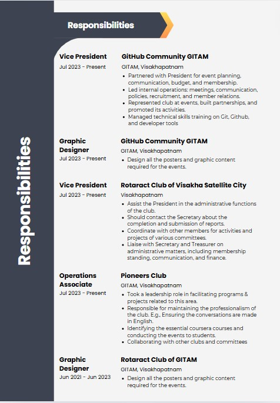

Resume Building
How strong is your resume? Get a free, confidential review from a resume expert.
Great Place to create Resume! Based on 13,221 reviews.
How it works
Show us what you're working with. Upload your resume to be reviewed — it’s an easy drag and drop.
- Upload your resume to be reviewed — it’s an easy drag and drop.
- Wait while the magic happens. It takes up to 48 hours for us to review your resume and provide personalized and actionable feedback.
- View your results. When the results land in your email inbox, it’s time to learn. Find out what you’re doing right and what you could improve upon to achieve your best resume.
Resume Building Activity
To help you create the perfect resume, we have a fun and interactive activity:
- Make a copy of the given resume template.
- Make necessary changes to the template in Canva to tailor it to your experience and skills.
- Once all changes are done, click "Send to Teacher" for approval.
What to Expect from Your Resume Review
We review your resume comprehensively so you get all the information you need. Feedback topics include:
- Style & Organization
- Writing & Mechanics
- ATS Analysis
Before your resume reaches the hands of a hiring manager, it often must satisfy an ATS — applicant tracking system. If a resume is not written with an ATS in mind, a qualified candidate can be easily passed over.
- Will the ATS (Applicant Tracking System) be able to read your resume?
- How does the ATS interpret your experience, skills, and the industries you have expertise in?
- Will an ATS mark you as a best fit for the jobs you're targeting?
Here is the sample preview of resume!!!

×